코스에 오신 것을 환영합니다
물리학 공부에 오신 것을 환영합니다! 물리학이란 무엇일까요? 이 질문은 코스 전반에 걸쳐 다시 다루게 될 것이며, 일상생활에서 물리학이 왜 중요한지 이해하게 될 것입니다. 이 코스에서 여러분은 에너지와 물질을 분석하고, 문제를 풀고 결과를 전달하며, 종합 과제에서 배운 것을 적용하여 실험 및 연구 능력을 보여줄 것입니다. 이 코스는 파동과 소리, 운동과 힘, 에너지와 사회, 전기와 자기의 네 단원으로 구성되어 있습니다. 각 단원에서는 물질과 에너지가 우리 삶에 미치는 영향을 탐구합니다.
파동과 소리
이 첫 번째 단원에서 여러분은 파동의 성질(특히 소리를 예로 들어)을 탐구하고, 관련 문제를 풀며, 파동이 사회와 환경에 미치는 영향을 조사할 것입니다. 이 단원의 마지막에는 파동과 소리와 관련된 문제를 풀고 그 결과를 교사에게 제출합니다.
과학적 의사소통
이 코스에서 여러분은 워드 프로세서를 사용하여 과제를 준비하고 제출하게 됩니다. 이 작업의 일부로 수식 편집기를 사용하여 전문적으로 서식이 지정된 수학 표현식을 작성해야 합니다. 자세한 내용은 코스의 "시작하기 - SPH3U에 오신 것을 환영합니다" 섹션을 참조하세요.
원하는 수식을 작성하기 위해 선택한 편집기의 사용법을 온라인에서 검색해야 할 수 있습니다.
대부분의 수식 편집기에는 기호 메뉴가 있어서 와 같은 기호를 찾을 수 있으며, 이들은 과제에 나타나게 됩니다. 또는 수식 편집기에서 단축키를 사용할 수 있습니다. 그리스 문자 파이(π)에는 "\pi"를 입력하고 스페이스를, 람다(λ)에는 "\lambda"를 입력하세요. 다른 기호도 유사한 단축키가 있습니다 - 자세한 내용은 수식 편집기의 도움말 섹션을 참조하세요.
노트
어휘: 다음은 파동의 특성과 관련된 용어 목록입니다. 노트에 '파동의 특성'이라는 제목 아래 이 용어들을 기록하세요. 이 학습 활동을 완료하면서 각 용어의 정의와 관련된 생각을 채워 넣으세요.
- 파동(wave)
- 진동하다(oscillate)
- 떨다(vibrate)
- 매질(medium)
- 펄스(pulse)
- 역학적 파동(mechanical wave)
- 전자기파(electromagnetic wave)
- 횡파(transverse wave)
- 파장(wavelength)
- 종파(longitudinal wave)
- 마루(crest)
- 골(trough)
- 주기(cycle)
- 주기적(periodic)
- 밀(compression)
- 소(rarefaction)
파동의 종류
다음 사진들을 살펴보세요:
앞의 사진에서 볼 수 있듯이 파동에는 다양한 종류가 있습니다. 서핑을 할 때의 물결처럼 유용한 경우도 있지만, 쓰나미처럼 파괴적인 경우도 있습니다. 음파는 주변 환경에 대해 알려주거나 음악을 통해 즐거움을 줄 수 있지만, 소음 공해를 일으키거나 소리가 너무 강해서 고막을 다치게 할 때는 파괴적일 수 있습니다.
생각해 보기
다양한 파동의 예를 생각해 보세요. 준비가 되면 '예시 답안 보기' 버튼을 눌러 일반적인 예시들을 확인하세요.
수면파, 줄의 파동, 음파, 빛(가시광선), 전파, X선, 마이크로파 등 다양한 파동이 있습니다.
탐구: 줄 위의 파동
활동
지금까지 다양한 종류의 파동을 살펴보았으니, 이제 파동이 어떻게 만들어지는지 이해해 봅시다. 다시 말해, 파동이란 무엇인가?라는 질문에 답해 보겠습니다.
다음 시뮬레이션을 해 보세요. 파동을 만드는 방법을 탐구하게 됩니다. 초기 설정에서 렌치를 위아래로 움직여(누르고 끌어서) 파동을 만들어 보세요.
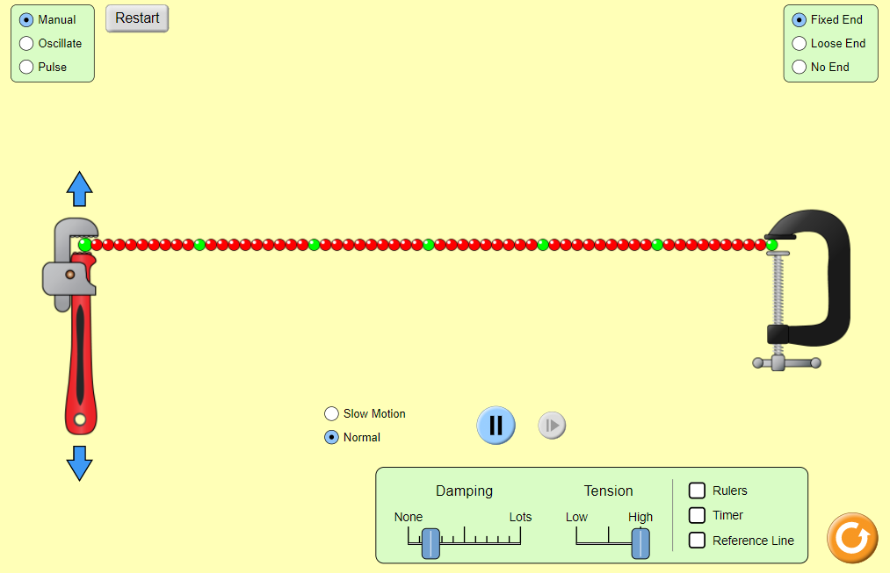
시작 (새 창에서 열림)노트
노트에 다음 질문에 대한 답을 작성하세요. 완료하면 예시 답안과 비교해 보세요.
- 시뮬레이션을 설명하세요.
- 파동의 원인은 무엇인가요?
- 시뮬레이션에서 사용할 수 있는 설정을 탐색하세요. 어떤 효과가 있나요?
- 줄에 일련의 파동이 생성됩니다. 파동은 결국 멈추며, 다른 쪽 끝에서 반사되어 원래 위치로 돌아옵니다.
- 렌치를 움직여 줄의 끝을 잡아당기면서 파동이 발생했습니다.
- 감쇠를 '없음'으로 설정하면 파동이 오랫동안 왕복했습니다. '최대'로 설정하면 매우 빠르게 멈췄습니다. 장력을 변경하면 파동의 속력이 변했습니다.
이 코스의 예시 답안에 대해 더 알아보려면 다음 버튼을 누르세요.
이 코스 전반에 걸쳐 이러한 예시 답안 버튼을 만나게 될 것입니다. 예시 답안은 말 그대로 하나의 예시일 뿐입니다. 다른 답을 생각해냈다면 예시 답안과 신중하게 비교해 보세요. 얼마나 다른가요? 기대되는 지식을 모두 포함하고 있나요? 그렇다면 잘 하고 있는 것이므로 계속 진행하세요. 여전히 다르다면 잠시 문제를 다시 생각해 보세요. 어떤 추가 정보를 얻을 수 있을까요?
파동이란 무엇인가?
시뮬레이션에서 파동은 줄을 통해 이동하면서 개별 점들을 위아래로 움직이게 했습니다. 일반적으로 모든 파동은 유사한 행동을 보입니다: 매질(예: 줄)을 통해 이동하면서 입자들을 앞뒤로 움직이게 합니다. 다른 말로, 입자들이 "진동"한다고 합니다.
따라서 파동이란 매질을 따라 입자에서 입자로 에너지를 전달하는 교란입니다.
파동은 매질의 진동에 의해 생성됩니다. 시뮬레이션을 떠올려 보세요: 파동이나 펄스(단일 파동)를 만들기 위해 줄의 한쪽 끝을 위아래로 움직여야 했습니다. 다음 파동의 예를 살펴보세요. 매질이 무엇인지, 파동 속 개별 입자들이 어떻게 움직이는지 생각해 보세요.
파동의 예
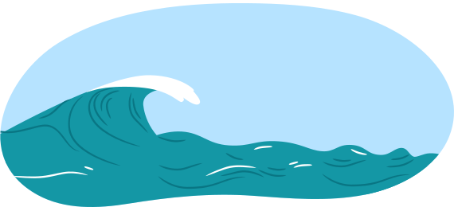
수면파: 물 입자를 통해 전달되는 교란입니다. 이 파동의 매질은 물 입자입니다. 수면파의 이전 이미지에서 보듯이, 파동이 지나갈 때 물 입자는 진동합니다.
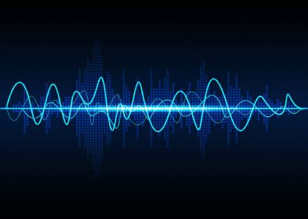
음파: 공기 입자를 통해 소리 에너지를 전달하는 교란입니다. 음파의 매질은 공기 입자입니다. 음파의 이미지에서 보듯이, 음파가 지나갈 때 공기 입자는 진동합니다.
탐구해 보기!
체육관에서 배틀 로프를 흔드는 사람의 다음 동영상을 살펴보세요.
동영상에서 매질을 찾을 수 있나요?
줄(로프)입니다.
이 예시들에서 파동이 에너지를 전달하는 매질이 항상 존재했습니다. 이러한 특성 때문에 이 파동들은 모두 역학적 파동이라고 합니다. 이 학습 활동에서는 역학적 파동이 공유하는 특성 중 일부를 분석하겠습니다.

파동의 분류
역학적 파동은 매질이 필요합니다. 역학적 파동 외에 또 다른 유형의 파동인 전자기파가 있습니다. 전자기파는 전달을 위해 매질이 필요하지 않으며, 우주 공간의 진공에서도 전파될 수 있습니다. 물리학 공부에서 개념은 처음에 단순화되었다가 점차 확장됩니다.
이 학습 활동에서는 두 가지 유형의 역학적 파동인 종파와 횡파를 공부하고 이를 구별하는 방법을 배웁니다. 이 코스에서는 역학적 파동만 학습한다는 점에 유의하세요. 전자기파에 대해 모두 배우려면 12학년 물리학을 수강해야 합니다!
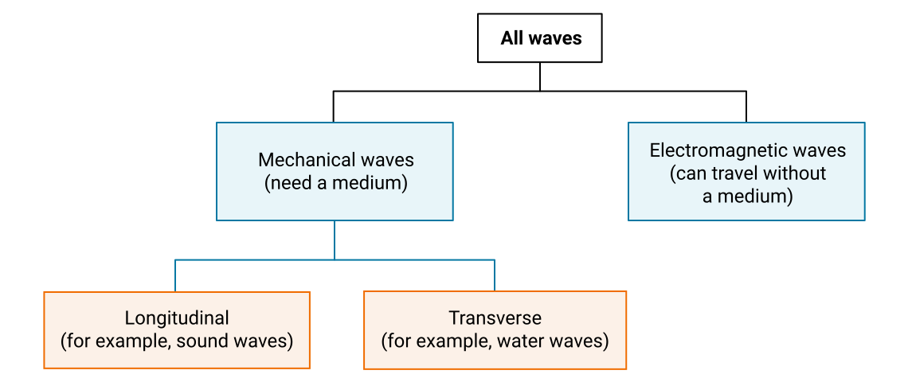
횡파
횡파에서 입자의 운동 방향과 에너지의 전달 방향은 서로 직각(수직)입니다. 에너지만 이동하며, 입자들은 에너지를 하나에서 다음으로 전달하면서 자신의 위치에 남아 있습니다.
탐구해 보기!
다음 동영상을 통해 횡파의 거동을 이해해 보세요:
관찰한 바와 같이, 입자는 위아래로 움직이지만 파동은 왼쪽에서 오른쪽으로 이동하므로 에너지는 입자의 운동 방향에 수직으로 이동합니다.
이 그림은 줄의 끝이 한 번의 완전한 위아래 주기(진동)를 거치면서 횡파가 생성되는 과정을 보여줍니다. 한 주기를 완료한 후 에너지는 줄의 E 지점까지만 도달했습니다. 파원이 한 번 진동한 후 파동이 이동한 거리를 파장이라고 하며, 기호 λ(그리스 문자 람다)로 나타냅니다.
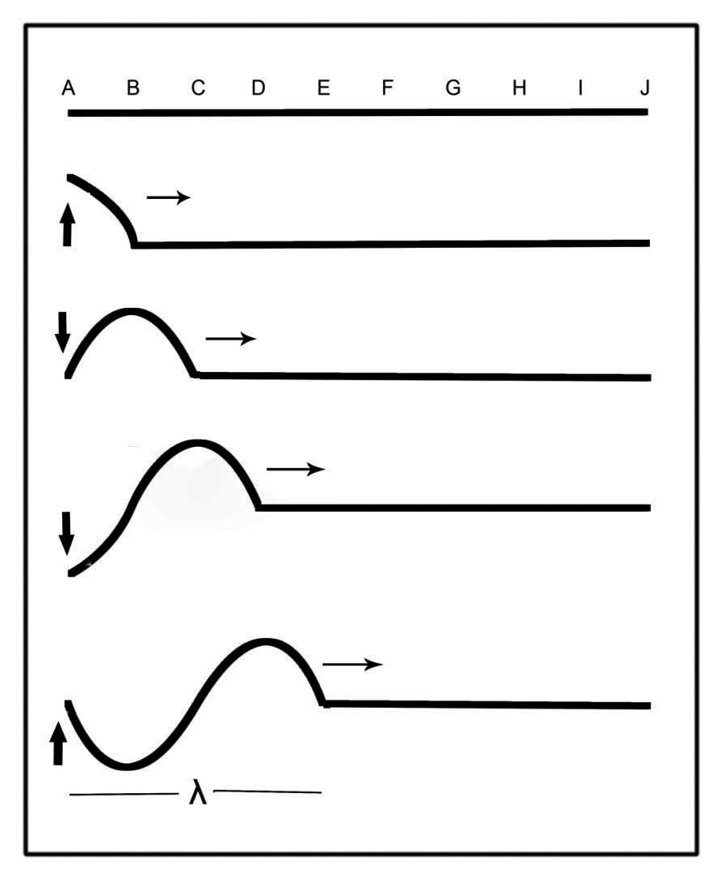
횡파의 생성
다음 그림에서 보듯이, 파동의 높은 부분을 마루라 하고 낮은 부분을 골이라 합니다. 마루는 진폭 A(마루와 골 사이 수직 거리의 절반)가 평형 위치 위에 있으므로 양의 펄스라고도 합니다. 골은 진폭이 평형 위치 아래에 있으므로 음의 펄스라고도 합니다.
마루와 골이 표시된 횡파
주기적인 진동을 이용하여 줄에 횡파를 만들면, 줄에 일련의 마루와 골이 동시에 보이게 됩니다. 이런 파동을 만들려면 다음 그림처럼 손을 일정한 진동수로 위아래로 움직여야 합니다. 모든 마루와 골은 동일한 진폭과 길이를 가집니다. 파동의 패턴이 반복적인 것에 주목하세요.
주기가 일정하면 파장(마루 하나와 골 하나에 걸친 거리)도 일정합니다. 파장은 보통 미터 단위로 측정하지만, 다른 길이 단위가 사용되는 경우도 있습니다. 파동은 마루와 골의 반복 패턴을 가지므로 파장을 측정하는 방법이 여러 가지 있습니다. 이 그림에서 동일한 길이의 네 구간이 그리스 문자 람다(λ)로 표시되어 있습니다.
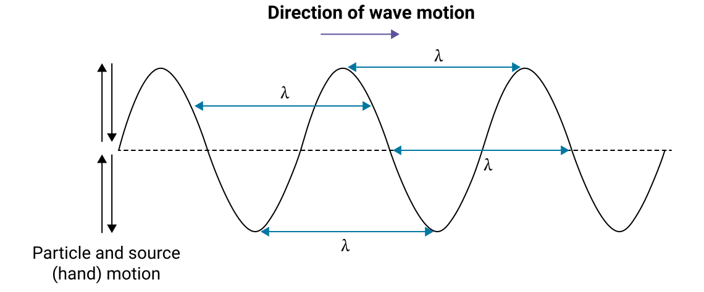
파장이 표시된 횡파
종파
매질 속 입자가 파동의 진행 방향과 평행하게 진동할 때, 이 파동을 종파라고 합니다.
탐구해 보기!
다음 동영상을 통해 종파의 거동을 이해해 보세요:
가장 흔한 종파는 음파입니다. 이 단원의 뒷부분에서 음파에 대해 더 배우게 됩니다.
종파인 음파를 시각화하는 한 가지 방법은 다음 애니메이션에서 보여주는 것처럼 “슬링키” 용수철을 사용하는 것입니다.
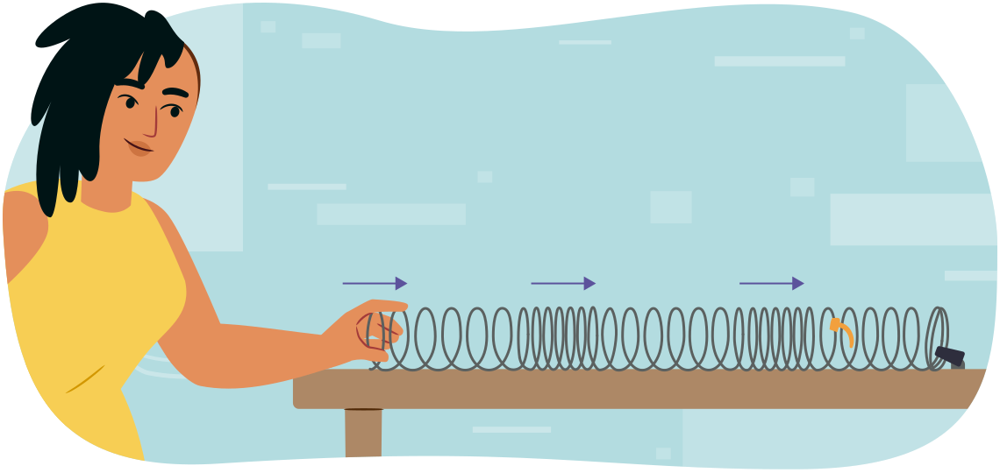
슬링키에서 종파를 만들려면, 바닥이나 다른 수평면 위에 슬링키를 일직선으로 놓으세요. 한쪽 끝을 고정된 위치에 묶고 다른 쪽 끝을 손으로 잡으세요. 슬링키를 적당한 길이로 늘린 상태에서, 잡고 있는 쪽 끝을 슬링키의 길이 방향과 평행하게 앞으로 밀었다가 다시 뒤로 당기세요. 종파에 대해 더 알아봅시다.
이 주기적인 운동은 슬링키를 밀 때 밀(압축)을 만들어 냅니다. 이 경우 슬링키의 코일이 서로 더 가까이 모이게 됩니다. 손을 슬링키에서 멀리 움직이면 소(희박)가 만들어집니다. 이 경우 다음 그림에서 보여주는 것처럼 슬링키의 코일이 더 멀리 퍼지게 됩니다.
이러한 밀과 소는 파동의 진행 방향과 평행하게 슬링키의 길이를 따라 이동합니다. 일반적으로 밀은 종파에서 매질의 입자가 정상보다 가까이 모일 때 발생하고, 소는 입자가 정상보다 멀리 퍼질 때 발생합니다.
슬링키에 리본을 묶으면 그림처럼 리본이 파동의 진행 방향과 평행하게 앞뒤로 움직이는 것을 관찰할 수 있습니다. 종파의 파장은 다음 그림처럼 연속된 두 밀 또는 두 소의 중심 사이 거리로 측정합니다. 횡파와 마찬가지로 평형 위치로부터 입자의 최대 변위가 진폭입니다. 한 주기 동안 이 입자들은 진폭의 네 배 거리를 이동합니다.
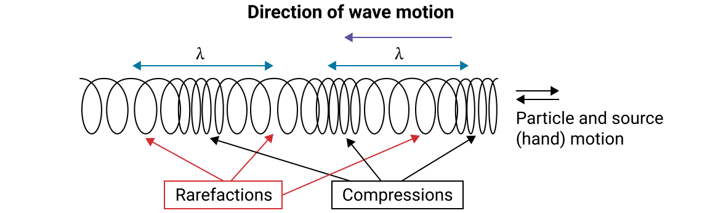
이상적인 파동과 실제 파동
앞의 파동에 대한 논의는 이상적인 경우를 나타냅니다. 물리학에서는 실제 세계가 매우 복잡하기 때문에 이상적인 경우를 먼저 고려해야 하는 경우가 많습니다. 이를 이상적인 파동이라고 합니다. 그러나 줄의 파동과 같은 실제 파동은 이동하면서 공기를 통과하거나 표면에 마찰합니다. 이러한 경우 마찰이 파동의 진폭을 감소시킵니다. 파동이 매질을 통과할 때 진폭은 점차 감소하지만 파장은 변하지 않는 것을 관찰할 수 있습니다.
해 보기!
활동 1
파동 시뮬레이션을 다시 사용해 봅시다. 실제 파동과 이상적인 파동을 비교하려면, 화면 하단의 감쇠(damping)를 “None”으로 설정하여 이상적인 파동을 만드세요. 그런 다음, 감쇠를 높여서 실제 파동을 만들어 보세요. 감쇠를 변경할 때 어떤 일이 일어나는지 관찰하세요.
활동 2
다음 "파동의 성질" 시뮬레이션을 사용하여 용수철로 만든 횡파와 종파의 차이를 관찰하세요. 그런 다음 이어지는 질문에 답하세요.
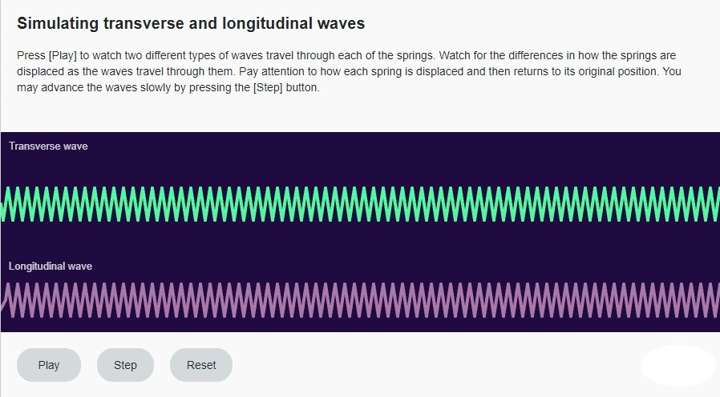
시작 (새 창에서 열림)- 종파는 횡파와 어떻게 다른가요?
종파에서 입자는 파동의 진행 방향과 평행하게 움직입니다. 횡파에서 입자는 파동의 진행 방향에 수직으로 움직입니다.
- 종파에서 밀(압축)을 어떻게 설명하겠습니까?
입자들이 서로 가까이 모여 있는 파동의 부분입니다.
- 횡파의 가장 높은 점을 무엇이라고 하나요?
마루입니다.
- 다음 그림을 보고 이어지는 질문에 답하세요.
그림에서 E에서 G까지의 거리는 파장으로 얼마인가요?
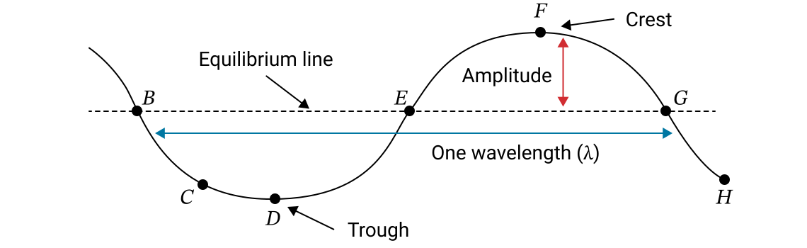
반 파장입니다.
잠시 쉬어가기!
훌륭합니다! 횡파와 종파에 대한 섹션을 완료했습니다. 주기적 운동으로 넘어가기 전에 잠시 쉬기 좋은 시간입니다.
주기적 운동
탐구해 보기!
다음 동영상을 통해 주기적 운동에 대해 알아보세요.
그네에서 앞뒤로 움직이는 학생은 파동 운동과 여러 면에서 같은 방식으로 설명할 수 있습니다. 놀이터의 그네는 줄에 매달린 질량이 앞뒤로 흔들리는 진자와 같습니다. 파동은 이러한 유형의 주기적 운동, 즉 동일한 시간 간격으로 반복되는 운동에 의해 자주 생성됩니다.
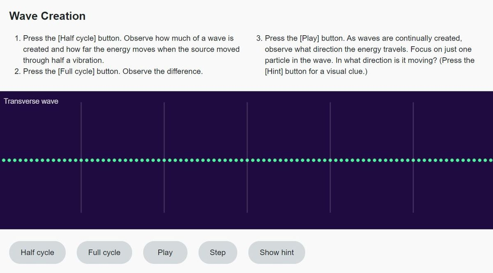
시작 (새 창에서 열림)파동 운동의 정량화
이제 파동 운동을 정량화할 시간입니다. 즉, 이 학습 활동에서 지금까지 해온 정성적(말을 사용한) 분석이 아니라 정량적(숫자를 사용한) 분석을 하게 됩니다.
시작하기 전에 물리학 학습에서 두 가지 중요한 개념을 복습해야 합니다: 과학적 표기법과 유효 숫자입니다.
과학적 표기법
과학적 표기법은 물리학에서 매우 큰 수(예: 지구의 질량은 약 kg)와 매우 작은 수(예: 전자의 질량은 약 kg)를 전달하는 데 정기적으로 사용됩니다.
일반 표기법의 수는 우리가 보통 생각하는 숫자만 사용하여 작성됩니다.
과학자들은 매우 크거나 매우 작은 수를 자주 다룹니다. 예를 들어 살아 있는 세포의 지름은 극히 작고, 우주에서 행성 간의 거리는 매우 큽니다. 일반 표기법을 사용하면 0이 너무 많아서 혼란이나 계산 오류를 초래할 수 있습니다. 따라서 이러한 수를 더 간결하게 나타내는 것이 가장 좋은 방법입니다.
과학적 표기법의 수는 다음과 같은 형태를 취합니다:
여기서 M은 1 이상 10 미만의 수이고, n은 소수점을 이동할 자릿수입니다.
지수 n은 소수점을 이동하거나 “점프”한 횟수와 같은데, 각 이동 또는 점프는 10의 배수를 나타내기 때문입니다.
중요한 점은, 양의 n은 일반 표기법에서 큰 수를 나타내고, 음의 n은 작은 수를 나타낸다는 것입니다.
예시
진공에서의 빛의 속력은 일반 표기법으로 초속 299,792,458미터로 쓸 수 있습니다. 과학적 표기법으로 약간 반올림하면 약 입니다. 소수점이 마지막 8 옆에서 첫 번째 2와 그 다음의 99 사이로 이동했습니다. 이것은 왼쪽으로 8칸 이동한 것이므로 과학적 표기법의 지수는 입니다. 값 3은 1과 10 사이이므로 과학적 표기법의 M 부분으로 적합합니다.
작은 백혈구의 지름은 약 0.000007미터입니다. 이 일반 표기법의 수는 0이 많아서 관련 값을 계산하면서 복사할 때 실수로 0을 너무 많거나 적게 쓰기 쉽습니다. 소수점을 7 뒤에 올 때까지 오른쪽으로 이동하면 과학적 표기법으로 쓸 수 있습니다. 이것은 오른쪽으로 6칸 이동이므로 과학적 표기법의 지수는 이 됩니다. 남은 값 7은 1과 10 사이이므로 M으로 적합합니다.
다음 수를 과학적 표기법과 일반 표기법 사이에서 변환해 보세요.
유효 숫자
과학적 계산 결과를 전달할 때는 항상 적절한 유효 숫자(유효 자릿수라고도 함)를 사용해야 합니다.
유효 숫자(유효 자릿수)란 실제로 측정된 숫자입니다. 측정값의 유효 숫자 수는 측정 장치와 최소 눈금의 크기에 따라 달라집니다(예: 대부분의 자에서 최소 눈금은 밀리미터입니다).
측정된 양의 유효 숫자 수를 결정하려면 몇 가지 규칙이 필요합니다. 어려움은 주로 0이 있을 때 발생합니다. 다음 표를 살펴보며 규칙을 알아보세요.
| 적용 규칙 | 예시 |
|---|---|
| 1-9의 모든 숫자(0이 아닌 수)는 유효합니다. | 193은 유효 숫자가 3개입니다. |
| 유효 숫자 사이의 0은 유효합니다. | 6003은 유효 숫자가 4개입니다. |
| 앞의 0(왼쪽에 유효 숫자가 없는 0)은 유효하지 않습니다. | 0.00345는 유효 숫자가 3개뿐입니다. |
| 뒤의 0(다른 모든 유효 숫자의 오른쪽에 있는 0)은 소수점이 있는 경우에만 유효합니다. | 0.000000980은 유효 숫자가 3개입니다. 0.14000은 유효 숫자가 5개입니다. |
측정값의 취득과 보고 모두에서 정확성이 중요합니다. 측정값/수치/수의 정확도는 그것이 포함하는 유효 숫자의 수에 의해 결정됩니다.
계산을 수행할 때, 최종 답을 계산한 후에는 유효 숫자를 사용하여 결론을 보고해야 합니다. 이 코스에서 일반적으로 최종 답은 계산에 사용된 유효 숫자 중 가장 적은 유효 숫자 수와 같아야 합니다. 이 제한은 값의 전달에만 영향을 미칩니다. 같은 수를 향후 계산에 사용할 경우 반올림하지 않은 전체 값을 사용한 다음, 다음 답을 보고할 때 다시 반올림해야 합니다.
예외: 정확한 값
일부 값은 정확한 값이며, 이 경우 무한한 유효 숫자를 가진 것으로 간주할 수 있습니다. 예를 들어 1분은 정확히 60초입니다. 분을 초로 변환하기 위해 60을 사용할 경우, 이 변환은 유효 숫자를 제한하지 않습니다.
수학적 및 과학적 의사소통에 대한 보충 정보는 코스의 '시작하기' 섹션을 참조하세요.
단진자: 주기적 운동의 예
그네를 타는 학생의 경우, 한 번의 완전한 진동(주기)은 한쪽 꼭대기에서 아래로, 다른 쪽 꼭대기로, 다시 아래로, 그리고 원래 위치로 돌아오는 것입니다. 평형 위치(질량이 정지 상태로 수직으로 매달려 있을 때)에서 최대 변위(질량이 최대 편향일 때)까지의 양쪽 거리를 진폭이라고 합니다.
주기적 운동을 설명하는 데 사용되는 몇 가지 용어가 있으며 모두 같은 의미입니다.
1 주기 = 1 진동 = 1 왕복
진자에서 a에서 b를 거쳐 c로 이동하면 반 주기만 진행한 것입니다. 한 번의 완전한 주기를 완성하려면 다음 그림처럼 a에서 c로 갔다가 다시 a로 돌아와야 합니다.
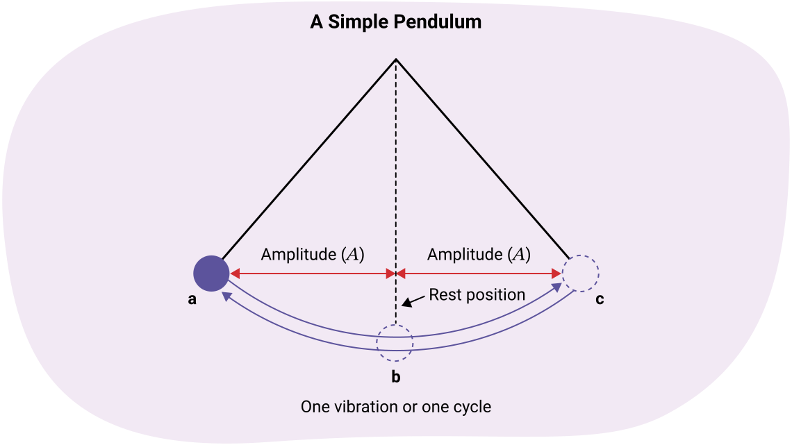
주기
물체가 한 번의 완전한 주기를 완료하는 데 걸리는 시간을 주기라고 합니다. 기호 T를 사용하여 주기를 나타내며, 주기(T)의 단위는 초입니다. 주기는 보통 초 단위로 측정하지만 분, 일, 년 등 다른 시간 단위도 사용할 수 있습니다. 초 단위로 측정할 때 기호 는 초를 나타내며, 주기의 측정이 초 단위임을 의미합니다.
예: 12초는 12 s로 씁니다.
주기는 다음 공식으로 계산할 수 있습니다:
공식
예제: 진자의 주기
진자가 5.0초 동안 20주기를 완성합니다. 한 주기를 완성하는 데 필요한 시간은 얼마인가요?
| 단계 | 예시 |
|---|---|
| 주어진 값 |
|
| 구하는 값 | |
| 공식 | |
| 풀이 | |
| 결론 |
한 주기를 완성하는 데 걸리는 시간은 0.25 s입니다. |
총 시간은 유효 숫자가 2개이고, 주기 수는 정확한 값으로 간주할 수 있습니다. 따라서 최종 결론은 유효 숫자 2개로 나타냈습니다.
참고
주기는 보통 초 단위로 측정하지만, 주기가 매우 길 경우 편의상 더 큰 시간 단위를 사용할 수 있습니다. 예를 들어, 달이 지구를 공전하는 주기는 27.3일입니다.
해 보기!
주기에 대한 이해를 확인하기 위해 다음 문제를 풀어보세요.
진동수
초당 주기 수를 진동수(f)라고 합니다. 진동수의 단위는 헤르츠(Hz)입니다. 참고: 1 Hz = 1/s.
진동수는 다음 공식으로 계산할 수 있습니다:
공식
여기서 시간은 초 단위로 측정합니다.
예제: 진자의 진동수
진자가 24초 동안 12주기를 진행합니다. 진자의 진동수는 얼마인가요?
| 단계 | 예시 |
|---|---|
| 주어진 값 |
|
| 구하는 값 | |
| 공식 | |
| 풀이 | |
| 결론 |
진자의 진동수는 0.50 Hz입니다. (진자는 1초에 0.5주기를 완성합니다.) |
시간의 유효 숫자가 2개이고 주기 수는 정확한 값이므로, 최종 답은 유효 숫자 2개로 기록했습니다.
생각해 보기
주기와 진동수의 관계
주기 공식을 다시 살펴보세요. 진동수 공식과 비교해 보세요. 잠시 멈추고 생각해 보세요 – 무엇을 알 수 있나요?
서로 역수 관계입니다! 다음 공식에서 보듯이 분자와 분모가 뒤집어져 있습니다.
따라서 진동수를 알면 주기를 구할 수 있고, 주기를 알면 진동수를 쉽게 구할 수 있습니다.
예제: 진자의 주기와 진동수
진자가 11초 동안 22번 진동합니다. 주기와 진동수를 구하세요.
| 단계 | 예시 |
|---|---|
| 주어진 값 |
|
| 구하는 값 | |
| 공식 | |
| 풀이 |
|
| 결론 |
진자의 주기는 0.50 s이고 진동수는 2.0 Hz입니다. 이는 진자가 한 주기를 완성하는 데 0.50 s가 걸리며, 1초에 2.0주기를 완성한다는 의미입니다. |
진폭
진폭은 입자가 평형 위치에서 이동하는 거리입니다.
진자가 평형 위치에서 흔들림의 꼭대기까지 이동할 때, 이것이 그림에 표시된 것처럼 진폭입니다. 한 번의 완전한 주기 동안 진자는 진폭의 네 배 거리를 이동합니다.
예제: 그네
학생이 그네에 앉아 1.4 m의 일정한 진폭으로 앞뒤로 움직이고 있습니다. 5주기 동안 학생이 이동한 총 수평 거리를 구하세요.
풀이
한 주기 동안 학생은 진폭의 네 배를 이동합니다. 총 5주기이므로 총 진폭 수 = 4 × 5 = 20 진폭입니다. 각 진폭은 1.4 m이므로 총 수평 거리 = 20 × 1.4 m입니다.
학생은 총 28 m의 수평 거리를 이동합니다.
해 보기!
진동수에 대한 이해를 확인하기 위해 다음 문제를 풀어보세요.
파동의 기본 방정식
이 섹션에서는 줄을 통한 파동의 운동을 고려하고 파동의 속력에 대한 방정식을 유도합니다. 줄의 한쪽 끝이 고정되어 있고 다른 쪽 끝을 손으로 잡고 있다고 상상하세요. 마루를 만들려면 먼저 손을 빠르게 위로 올렸다가 평형 위치로 내리고, 다시 손을 아래로 내렸다가 평형 위치로 올려 골을 만듭니다. 이 주기적 운동을 하면 다음 그림처럼 파동이 줄(매질)을 통해 이동합니다. 파원이 한 주기를 만들 때마다 파동이 한 파장만큼 전진한다는 것을 기억하세요.
모든 유형의 파동은 매질을 통해 이동할 때 일정한 속력을 유지합니다. 예를 들어, 물그릇에 돌을 떨어뜨리면 돌이 만든 파동은 그릇의 가장자리에 도달할 때까지 같은 속력으로 이동합니다. 속력이 변하지 않으므로 등속 공식을 사용할 수 있습니다.
파동의 속력
파동의 속력을 분석하려면 먼저 속력을 계산하는 방법을 이해해야 합니다.
파동의 속력은 다음 공식으로 계산할 수 있습니다:
공식
- v는 파동의 속력을 나타내며, 단위는 미터 매 초(m/s)입니다
- d는 파동이 이동한 거리를 나타내며, 단위는 미터(m)입니다
- t는 파동이 이동하는 데 걸리는 시간을 나타내며, 단위는 초(s)입니다
파동의 길이에는 특별한 이름이 있는데, 바로 파장(λ)입니다. 따라서 d 대신 λ를 사용합니다. 파동이 한 주기를 완성하는 시간에도 특별한 이름이 있는데, 바로 주기(T)입니다. 따라서 t 대신 T를 사용합니다.
이것은 파동의 속력에 대한 새로운 공식을 제공합니다:
공식
- v는 파동의 속력을 나타내며, 단위는 미터 매 초(m/s)입니다
- λ는 파동 한 주기의 길이를 나타내며, 단위는 미터(m)입니다
- T는 파동 한 주기가 지나가는 시간을 나타내며, 단위는 초(s)입니다
진동수와 주기 사이에는 역수 관계가 있으므로, 주기(T)로 나누는 대신 진동수(f)를 곱하여 파동의 기본 방정식을 도출할 수 있습니다.
따라서 파동의 기본 방정식은 다음과 같습니다:
공식
- v는 파동의 속력을 나타내며, 단위는 미터 매 초(m/s)입니다
- λ는 파동 한 주기의 길이를 나타내며, 단위는 미터(m)입니다
- f는 파동의 진동수를 나타내며, 단위는 헤르츠(Hz)입니다
이것은 매우 중요한 방정식입니다. 이것은 파동의 기본 방정식으로, 모든 유형의 파동에 적용됩니다. 수면파, 음파, 빛, 줄의 파동 등의 속력, 파장, 진동수를 구하는 데 사용할 수 있습니다.
예제 1: 파동의 기본 방정식
음파의 진동수가 256 Hz이고 335 m/s로 이동하고 있습니다. 이 음파의 파장은 얼마인가요?
| 단계 | 예시 |
|---|---|
| 주어진 값 | |
| 구하는 값 | |
| 공식 | |
| 풀이 | |
| 결론 | 음파의 파장은 1.31 m입니다. |
예제 2: 수면파
수영장에서 수면파의 파장이 4.0 m입니다. 파동이 2.7초에 6.0 m를 이동합니다. 파동의 진동수를 구하세요.
| 단계 | 예시 |
|---|---|
| 주어진 값 | |
| 구하는 값 | |
| 공식 | |
| 풀이 |
팁: v가 주어지지 않았으므로 먼저 v=d/t를 사용하세요 |
| 결론 |
수면파의 진동수는 0.56 Hz입니다. |
해 보기!
이제 “줄 위의 파동” 시뮬레이션을 완료하여 파동에 대해 배운 많은 개념을 강화하고 새로운 것을 알아보세요.
시뮬레이션 설정 변경 안내:
- 파동을 “Pulse”로 설정하세요.
- 감쇠를 “None”으로 설정하세요.
- ”Slow motion”으로 설정하세요.
- 높은 장력을 유지하세요.
- ”Timer”를 눌러 파동 펄스가 줄을 따라 이동하는 시간을 측정하세요.
- ”Amplitude”와 “Pulse width”는 그대로 두세요.
초록 버튼을 누르고 생성된 파동을 관찰하세요. 한쪽 끝의 초록 구슬에 도달하면 타이머를 시작하고, 파동이 다른 쪽 끝에 도달하면 타이머를 멈추세요.
타이머 사용에 익숙해질 때까지 이 과정을 연습하세요.
활동에 충분히 익숙해지면 시간을 기록하고, 타이머를 리셋한 후 노트에 세 번 더 반복하세요. 네 번의 시간의 평균을 구하여 실제 시간의 좋은 근사값을 얻으세요.
이제 진폭과 펄스 폭을 변경하세요. 실험을 다시 하세요. 진폭과 펄스 폭의 다른 조합으로 세 번째, 네 번째도 해 보세요. 시간에 대해 무엇을 알 수 있었나요?
각 시행에서 파동 펄스가 이동한 거리가 같다면, 같은 매질에서 파동의 속력에 대해 무엇을 결론지을 수 있나요?
파동 펄스의 속력은 (진폭이나 폭에 관계없이) 같은 매질에 있는 한 일정하게 유지됩니다.
파동의 기본 방정식에 대한 이해를 확인하기 위해 다음 문제를 풀어보세요.
파동의 반사
한 매질을 통해 이동하는 파동이 다른 매질을 만나면, 새로운 매질에서 반사되어 왔던 방향으로 되돌아갈 수 있습니다. 이는 공기 중의 음파가 벽에 부딪힐 때, 해양 파도가 절벽에 부딪힐 때, 슬링키의 횡파가 슬링키의 끝에 부딪힐 때 발생할 수 있습니다. 메아리와 악기를 작동하게 하는 소리의 성질과 같은 예시를 이 코스에서 학습합니다.
다음 활동에서 두 가지 다른 상황에서 파동이 어떻게 반사되는지 탐구합니다. 첫 번째 상황은 파동이 고정단에 부딪히는 경우로, 파동의 끝이 움직일 수 없습니다. 두 번째 상황은 파동이 자유단(느슨한 끝)에 부딪히는 경우로, 파동의 끝이 움직일 수 있습니다.
해 보기!
다음 시뮬레이션을 열고, 왼쪽 상단에서 “Pulse”를 선택하세요. 오른쪽 상단에서 “Fixed End”를 선택하세요. “Damping”을 None으로 설정하세요. 초록 버튼을 누르고 파동이 고정단에 도달할 때마다 무슨 일이 일어나는지 관찰하세요. 원한다면 “Slow Motion”으로 설정할 수 있습니다. 무슨 일이 일어나는지 충분히 파악했으면, 오른쪽 상단의 설정을 “Loose End”(자유단)로 변경하고 초록 버튼을 누르세요. 파동이 자유단에 도달할 때마다 무슨 일이 일어나는지 파동의 행동을 충분히 파악할 때까지 관찰하세요. 이후 다음 동영상을 살펴보고 질문에 답하세요.
탐구해 보기!
다음 동영상은 고정단에서 생성된 파동의 시연입니다.
파동이 고정단에 도달하면 어떻게 되나요?
파동이 뒤집어집니다(반전됩니다). 나머지(진폭, 속력, 파장)는 모두 동일하게 유지됩니다.
탐구해 보기!
다음 동영상은 자유단에서 생성된 파동의 시연입니다.
파동이 자유단에 도달하면 어떻게 되나요?
파동이 뒤집어지지 않습니다(반전되지 않습니다). 모든 것(진폭, 속력, 파장)이 동일하게 유지됩니다.
시뮬레이션을 원하는 만큼 반복하여 파동이 고정단 또는 자유단에 부딪힐 때 어떤 일이 일어나는지 확실히 이해하세요. “반전(invert)”이라는 단어는 뒤집어진다는 의미입니다.

문제 풀이 구조
이전 과학 코스에서 다양한 문제 풀이 방법을 배웠을 수 있습니다. 예를 들어, GUESS 방법(주어진 값, 구하는 값, 공식, 풀이, 결론)은 문제에 대한 답을 전달하는 일반적인 방법입니다.
| 단계 | 설명 |
|---|---|
| 주어진 값 |
문제에서 주어진 변수를 작성하세요. |
| 구하는 값 |
계산하려는 변수를 명시하세요. |
| 공식 |
사용된 공식을 명시하세요. |
| 풀이 |
주어진 값을 공식에 대입하고 미지수를 구하세요. |
| 결론 |
짧은 결론 문장을 작성하세요. 달리는 사람의 속력은 2.8 m/s입니다. |
학습 되돌아보기
파동과 파동의 행동에 대해 배우고 있습니다. 각 항목을 되돌아보며 “예”, “시작 중”, “아직”을 선택하세요.
| 예 | 시작 중 | 아직 | |
|---|---|---|---|
| 나는다양한 매질에서 종파와 횡파를 구별하고, 두 유형의 예를 제시한다. | |||
| 나는주기적 운동의 주기와 진동수를 모두 계산한다. | |||
| 나는다양한 매질에서의 음속 관계를 설명한다. | |||
| 나는파장, 진동수, 파동의 속력과 관련된 문제를 풀 수 있다. | |||
| 나는고정단과 자유단에서의 파동 반사를 설명한다. |
전이 가능 역량과의 연결
최근 온타리오주는 캐나다의 다른 주들과 협력하여 성공에 필요한 역량을 정리했습니다. 온타리오주는 학생들이 시간이 지나면서 발전시켜야 할 전이 가능 역량 체계를 개발했습니다. 이 역량들은 오늘날의 세계에서 성공하기 위해 중요한 것들입니다.
역량 체계와 학생 관찰 지표 (새 창에서 열림)를 읽어보세요. 이 문서를 노트에 복사하세요 - 각 단원에서 참조하게 됩니다.
이 코스에서 발전시킬 것으로 생각되는 지표를 기록하세요. 코스 마지막에 이 역량들을 다시 확인하여 실제로 어떤 것을 발전시켰는지, 원래 예측이 맞았는지 확인할 것입니다.
노트
각 학습 활동에서 수행할 지속적인 과제는 사용된 물리 공식을 파악하고 노트에 기록하는 것입니다.
항상 노트를 사용할 수 있도록 하세요.
학습 활동 시작 시 노트에 적은 어휘를 확인하세요. 각 단어 옆에 정의가 있는지 확인하세요.
실물 노트의 마지막 페이지 또는 별도의 전자 파일에 다음 제목을 작성하세요:
11학년 물리 공식
코스의 모든 공식을 위해 빈 페이지를 남겨두세요. 실물 노트를 사용하는 경우 약 5페이지가 필요할 수 있습니다.
다음과 같은 정보를 추가하세요:
단원 1: 파동과 소리
이 학습 활동에서 제시된 모든 공식을 포함하세요. 그런 다음, 공식 옆에 다음 예와 같이 어떤 상황에서 그 방정식을 사용할 것인지 짧은 메모를 작성하세요.
예시
파동의 속력을 구하는 데 사용, 변수: 속력, 파장, 진동수.
참고
코스 전반에 걸쳐 이 아이콘이 보이면 새로운 공식을 공식 모음에 추가하세요.
자기 점검 퀴즈
이해도를 확인하세요!
다음 자기 점검 퀴즈를 완료하여 학습 진행 상황과 집중해야 할 영역을 파악하세요.
이 퀴즈는 피드백 목적으로만 사용되며, 성적에 포함되지 않습니다. 무제한으로 시도할 수 있습니다. 시간을 갖고, 최선을 다하며, 제공된 피드백을 성찰하세요.
퀴즈를 눌러 이 도구에 접근하세요.